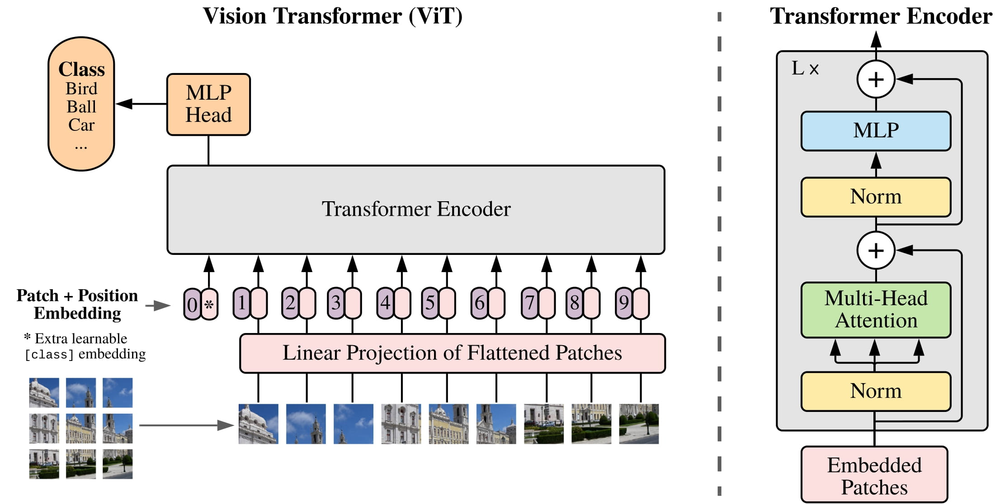

Existen un conjunto de metodologías y enfoques que pueden apoyar a este problema, en particular, debido al
conjunto de imágenes encontrados de entrenamiento [9], se pensó en una estructuración robusta del modelo, por lo
que se optará por utilizar un modelo de Vision Transformer (ViT) que busca tener un comportamiento parecido al
Transformer implementado en procesamiento de lenguaje natural, pero para imágenes. En específico, se buscará
realizar un Fine Tuning a un modelo YOLO, es decir realizar un entrenamiento sobre un modelo pre-entrenado.
ViT.
Para realizar el entrenamiento de un modelo ViT, se mostrará de manera secuencial, qué recorrido realiza a una
imagen en particular.
Patching.
Divide la imagen en “parches”, con un tamaño de parches 16 x 16 y son aplanados en un vector 16 x 16 x C,
siendo C, el número de canales de la imagen. Por ejemplo: Si la imagen es de 224 x 244 RGB, se obtienen 196
parches en total [10] con dimensión 768.
Embedding.
Similar al comportamiento de los transformers, a cada parche se le hace un embedding lineal de dimensión D,
donde D es un hiper parámetro del modelo ViT, y es el que representa la capacidad del modelo de adquirir
características complejas o con imágenes con ruido en una imagen [11]. Los valores usuales en D, varían
dependiendo la configuración inicial de ViT: ViT-Base: 𝐷=768; Para ViT-Large: 𝐷=1024; Para ViT-Huge: 𝐷 =
1280 [12].
Adición del Token de Clasificación.
A cada vector embeding se le concatena al inicio un token de clasificación (CLS) inicialmente dado por cero,
es token cambia a medida que se va transcurriendo el entrenamiento [10].
Adición de Positional Encodings.
A cada vector embeding con token CLS, se suma un vector posicional para que el modelo pueda aprender la
posición relativa de cada parche en la imagen [13].
Entrada al Transformer Encoder.
Cada vector embeding con token CLS sumado con su vector posicional se introduce hacia el encoder transformer
que está compuesta por capas de Self.Atenttion, Multi-Head y feed-forward totalmente conectadas:
-> Self.Atenttion y Multi-Head: Permite al modelo aprender relaciones de largo alcance entre los
parches. a través de una matriz de atención que representa la importancia de cada parche con
respecto a los demás.
-> Feed-forward: Luego de aplicar una normalización por capas a los resultados del ítem anterior, se
pasa a través de una red neuronal completamente conectada, normalmente con una función de activación
no lineal (ReLU o GELU), seguida de otra normalización por capas y conexión residual [10]. Este
proceso se repite por cada capa en el encoder.
Extracción del Token de Clasificación.
Luego de pasar por cada una de las capas del encoder (12-14 capas [10]), a cada vector embedding con token
CLS sumado con su vector posicional, se obtiene el token CLS que pasa por una capa Softmax para obtener la
probabilidad de pertenecer a una clase [14].
Actualización de Pesos y Optimización.
Con la salida del modelo se comparan las etiquetas verdaderas de la imagen para calcular el valor de la
función de pérdida, se realiza retropropagación para ajustar los pesos del modelo utilizando un optimizador
(por ejemplo, Adam o SGD), sos pesos del modelo se actualizan utilizando algoritmos de optimización basados
en el gradiente (como Adam o SGD), y se repiten los pasos de forward pass y backpropagation para cada lote
de datos hasta que se complete el número de épocas de entrenamiento [15].
Se puede apreciar la arquitectura de ViT en la siguiente imagen, sacada del paper original [10]

Arquitectura ViT
YOLOS.
En este caso, se realizó la implementación de Fine-Tunning a dos arquitecturas de YOLOS:
Usando el modelo “hustvl/yolos-small” de la librería YolosImageProcessor de transformers [16]. Utilizando
fotos de carreteras de Japón, Noruega e India disponibles en [9], dicha arquitectura se le hará referencia
como yolos-small.
Usando el modelo “yolov8s.pt”, utilizando todas las fotos disponibles para entrenar en [9].
Antes de explicar la arquitectura del modelo, se deben establecer las diferencias entre los modelos trabajados,
debido a que sus estructuras son semejantes, poseen enfoques diferentes que afectan desde su procesamiento hasta
su entrenamiento, dichas diferencias se mostrarán en la siguiente tabla.
Diferencias entre yolov8s y yolos-small
Nombre
Arquitectura
Aplicación
yolov8s
Es la última iteración del modelo YOLO a la fecha, donde se enfoca en la eficiencia y uso de la CNNs
para extracción de características [17].
Ideal para aplicaciones en tiempo real y casos donde se necesita un buen equilibrio entre precisión y
velocidad [17].
yolos-small
Más parecido a la estructura inicial de YOLOS buscando la manera de detectar como DETR [16]
Aprovecha la capacidad de los transformers para modelar relaciones espaciales complejas [16].
Teniendo presente las diferencias anteriores, se mostrará, con una imagen en particular, cuál es el proceso de
aprendizaje de esta arquitectura:
Preparación de Datos.Se debe contar con una imagen y, las clases y bounding boxes (con
formato x, y, w, h, estandarizados a la imagen original) correspondientes de dicha imagen. Estas tendrán un
tamaño fijo de resolución, desde 512 x 512 hasta 874 x 874 [17].
División de la Imagen en Cuadrículas.División de la Imagen en Cuadrículas.
Forward Pass (Pasada hacia Adelante). Con cada una de las celdas de la imagen se establece
una tubería de transformación, donde la diferencia entre yolov8s y yolos-small es que en el Head, antes de
obtener predicciones, pasa por más capaz de convolución [17] buscando realizar un barrido más detallado
buscando predecir la clase con una mayor confianza. Aún con esto ambos modelos realizar el siguiente Forward
Pass:
Backbone.Está compuesto por un conjunto de capas de redes neuronales
convolucionales que convierte cada celda de la imagen en mapas de características que capturan
información sobre patrones, texturas y formas en diferentes niveles de profundidad [16].
NeckA cada vector de características aplanado de cada celda de la imagen se le
realiza un path aggregation buscando mejorar la capacidad de la red para detectar objetos de
diferentes escalas y combinar características de diferentes niveles de la red backbone [16]
Head. Con dicho vector de características, luego de la pasada de Neck de cada celda
de la imagen se realiza la regresión de las coordenadas del bounding box (x, y, w, h), calcula el
valor de confianza con respecto a la contención de una clase de interés en la bounding box, y
predice la clase de cada uno de los bounding box [17].
Backpropagation (Retropropagación) y Optimización.Con la triada de valores (Coordenadas del
bounding box, clase, valor de confianza), se realiza el cálculo de los errores respectivos: desviación
estándar en el centro, ancho y altura del bounding box con respecto a las reales, el error en la
probabilidad de clase predicha comparada con la clase verdadera del objeto y la confianza predicha comparada
con la puntuación real. La función de pérdida global suma estos tres valores. Posteriormente, luego de
acumular todos los valores de pérdidas globales se calculan los gradientes con respecto a los pesos de la
red utilizando el algoritmo de retropropagación y los pesos de la red se actualizan utilizando un
optimizador (como Adam o SGD) para minimizar la función de pérdida [16].